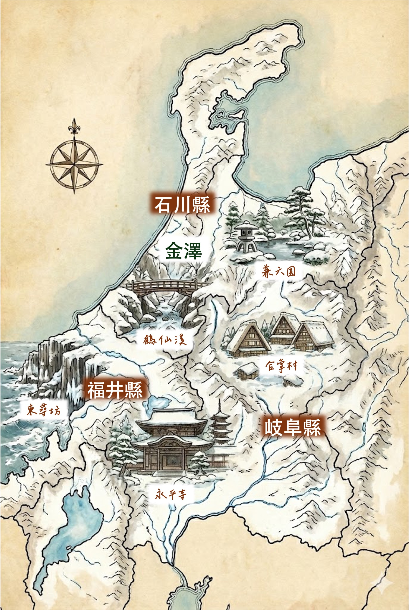

FAMILY TRIP
過年來踩雪
2026.02.18 - 02.23
📍 金澤 Kanazawa
未來 7 天📍 福井 Fukui
未來 7 天⚠️ 必備物品提醒
- 防水防風外套、防水鞋/雪鞋 (下雪機率很高)。
- 保暖帽子、手套一定要帶。
- 建議行李配置：24寸行李箱 + 軟袋/背包 (因包車空間有限)。
📍 行程總地圖

憑證檢視
Page /
住宿與 VJW 資訊
Postal Code 郵遞區號
9200981
Address 地址
1 Chome-4-23 Katamachi
Hotel Name 飯店名稱
OMO5 KANAZAWA
❄️ 冬季情報 & 特產
🦀 石川縣 (金澤)
美食 加能蟹/香箱蟹：冬季限定，肉質鮮甜。
特產 金箔：金箔冰淇淋。
景色 兼六園雪吊：冬季獨有美景。
🦕 福井縣
美食 越前蟹：皇室貢品等級。
特產 羽二重餅、日本酒。
景點 永平寺、恐龍博物館。